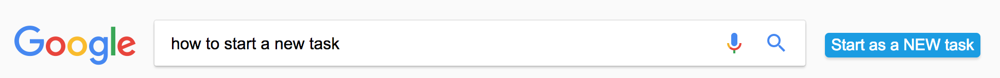
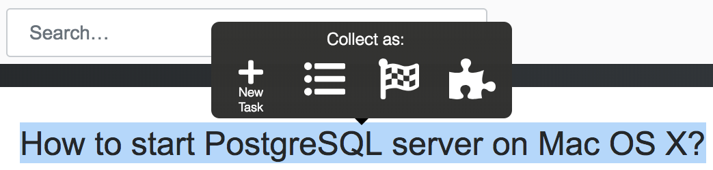
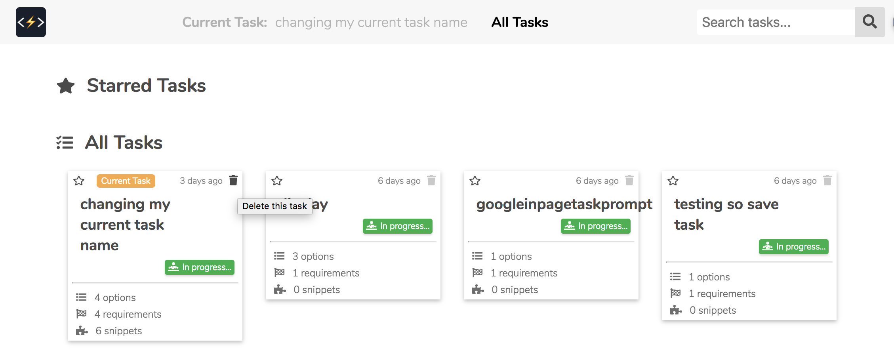
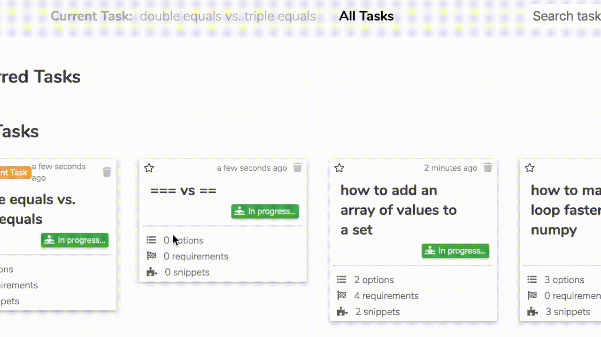

Getting Started
Welcome to the KAP chrome extension!To install the extension, first log in to your Chrome Browser (note that this is not just logging in to G Suite) with an account that can access the Chrome Web Store.
Next, use on the email link you received to find and install the extension on the Chrome Web Store.
Please refer to this guide about how to use the extension or contact us with bugs at:Tasks
What is a Task?
As the name suggests, a task can be anything from "How do I resolve a linker command failed with exit code 1 error?" to "How do I undo commits in Git?" to "What resturants are available for dinner?" It also doesn't have to be a question, another task could be "Picking framework for a project".Tasks can be added, edited, deleted, or combined. You can also mark a task as ongoing or completed.
How to Start a Task
A new task can be initiated with the Start as NEW task button next to the search bar on any Google search page
Alternatively, the select popover also has a button to start a new task. Simply highlight some html text and you will see the popover option New Task
How to Change the Name of a Task
At the center of the extension popup is a section for selecting the current task. This box can be edited to change the name of the current task.
The current task box on Google search pages provides another way edit the task name
How to Delete a Task
All tasks of your account can be viewed under the KAP mainpage by selecting the All Tasks button. Under this view you can use the trash icons on the top right of the task card to discard any unwanted task. How to Combine Tasks
To combine two tasks, drag one task card onto the other. How to Switch to another Task
From the extension popup you can use the select dropdown to navigate to another task.
The All Tasks view on the KAP mainpage also allows switching to another task when you select a particular task card.Options
What is an Option?
Options are the various way that a task or problem may be completed or solved. Options may be created, deleted, starred, or marked as used.How to Add/Collect an Option
An option may added from the extension popup or the the interaction box when collecting a snippet (see how to collect one in the Snippets section).

Edit, Delete, Star or Use an Option
Options can be edited by clicking inside their boxes in the extension popup or comparison table.
Options can be deleted from the extension popup using the delete button on the top right of each option.An option can be starred in the popup or from the comparison table on the mainpage.


An option may also be marked as used in the comparison table.